Chapter 5 Probabilistic Modeling: Embracing Uncertainty in Environmental Systems
Environmental systems are complex and variable. No two days of rainfall, no two migration seasons, and no two pollution events are exactly alike. Traditional deterministic models give a single outcome for a given set of inputs, but real-world systems are rarely that predictable.
This chapter introduces probabilistic modeling—an approach that explicitly represents uncertainty, randomness, and variability. You’ll learn how to use probability distributions, random sampling, and simulation to describe and analyze environmental systems where outcomes are not fixed but occur within a range of possibilities.
5.1 Introduction: Why Probabilities Matter
Deterministic models are powerful but limited—they produce only one trajectory of change. In environmental systems, variability is the rule, not the exception. Probabilistic models help us ask questions in terms of likelihoods rather than certainties.
Examples:
- What is the probability that river flow will exceed flood stage next year?
- How likely is it that a pollutant will stay above a safe concentration threshold?
- What are the chances a species population will persist for 50 years?
By framing predictions probabilistically, we not only acknowledge uncertainty but also make models more informative and realistic for decision-making.
5.2 Sources of Uncertainty
Uncertainty enters environmental models from several directions. Recognizing its sources helps us model it appropriately.
- Aleatory uncertainty refers to natural randomness—unpredictable fluctuations inherent to the system. Weather, genetic variation, or random seed dispersal are examples.
- Epistemic uncertainty comes from lack of knowledge. We might not know the true growth rate of a species or the exact decay constant of a pollutant.
- Model structural uncertainty arises from simplifications and missing processes.
- Measurement error comes from noisy or biased observations.
In practice, all four interact. A rainfall–runoff model, for example, has aleatory uncertainty in rainfall, epistemic uncertainty in soil properties, and structural uncertainty in how infiltration is represented.
5.3 Primer: Probability, PDFs, and CDFs
Before we build probabilistic models, we need to understand the language of probability. Probability gives us a way to quantify uncertainty—the likelihood of different outcomes.
5.3.1 Probability Basics
- A random variable represents a quantity that can take on different values, each with some probability.
- For discrete variables, we use \(P(X = x)\).
- For continuous variables, we consider ranges: \(P(a < X < b)\).
Example: Let \(R\) be daily rainfall. \(R\) can take any non-negative value, and we might ask, “What is the probability that rainfall tomorrow exceeds 10 mm?”
5.3.2 Probability Density Function (PDF)
A probability density function (PDF) describes how probability is distributed over the range of possible values.
\[ P(a < X < b) = \int_a^b f(x)\,dx = 1 \]
- The total area under the curve equals 1.
- The height of \(f(x)\) at any point shows relative likelihood, not actual probability.
Environmental interpretation:
Rainfall PDFs are often skewed right—many dry days, fewer wet ones, and rare extreme storms.
Activity: PDFs
For each of the distributions below, interpret the pdfs with respect to the system variables they represent.
Think about the features of the pdf curve and what they mean with respect to the variable.

Activity: CDFs
For each of the distributions below, interpret the cdfs with respect to the system variables they represent.
Think about the features of the cdf curve and what they mean with respect to the variable.
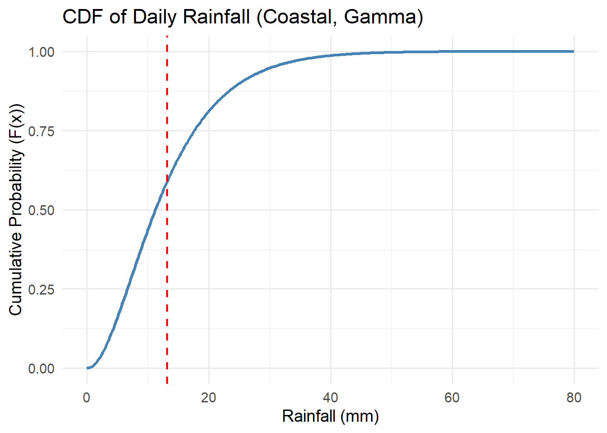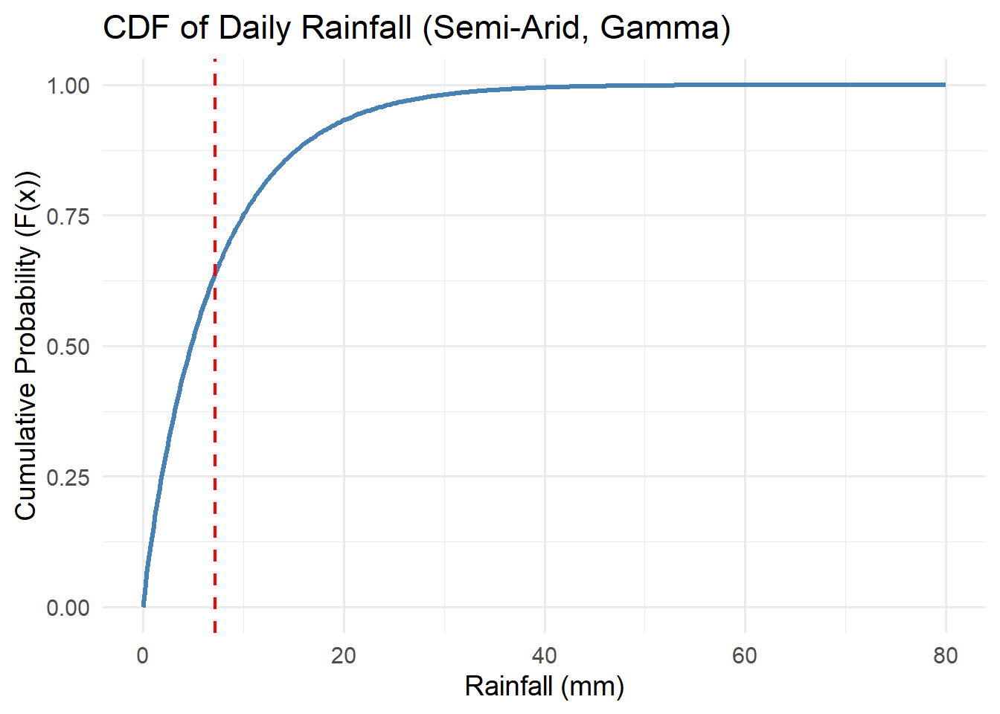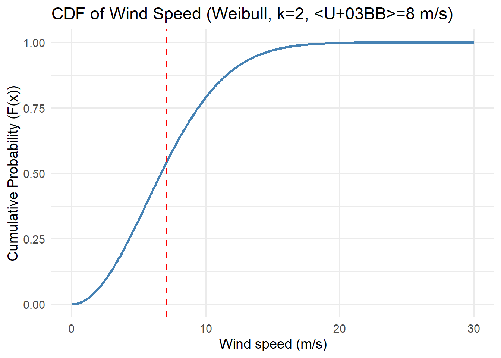 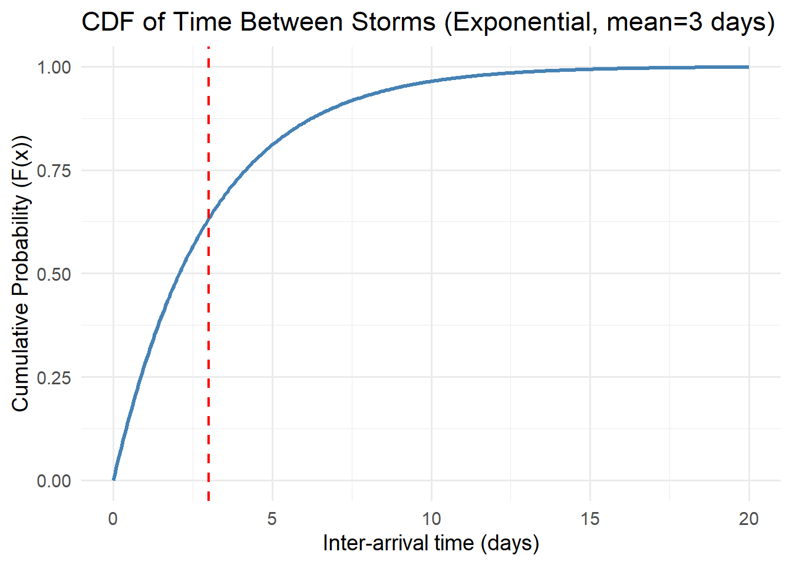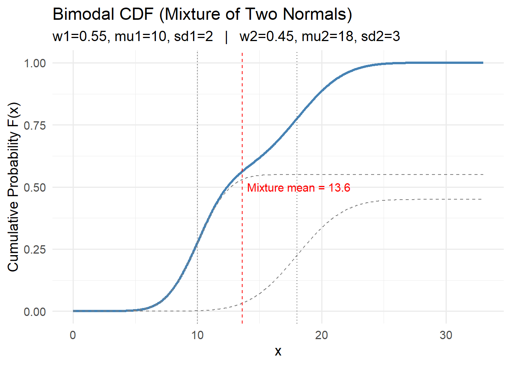
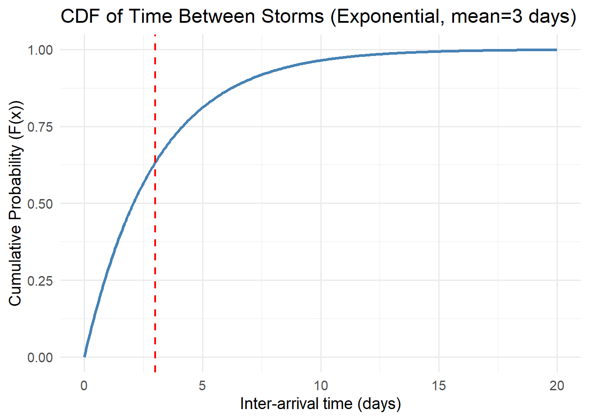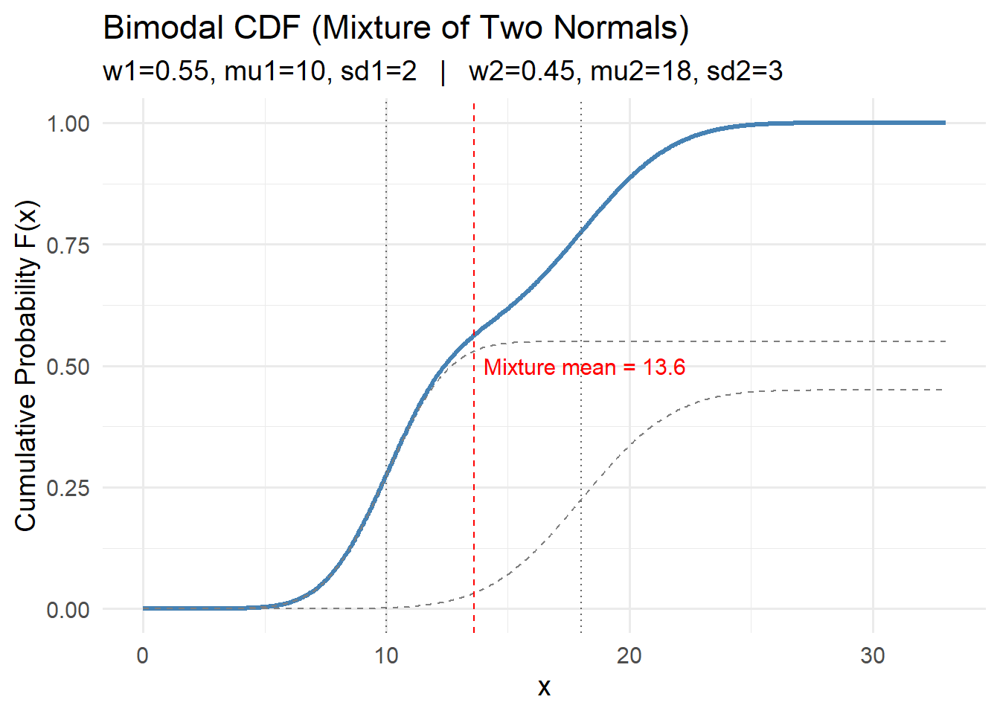
5.3.3 Cumulative Distribution Function (CDF)
The cumulative distribution function (CDF) gives the probability that a variable is less than or equal to a value \(x\):
\[ F(x) = P(X \le x) = \int_{-\infty}^{x} f(t)\,dt \]
CDFs rise from 0 to 1, showing cumulative probability. If \(F(10) = 0.8\), there’s an 80% chance rainfall will be below 10 mm on a given day.
How to see this visually. The shaded area under the PDF from the minimum up to a threshold \(x_0\) is exactly the CDF value \(F(x_0)\). The plot below shows (left) a right-skewed rainfall PDF with area shaded up to \(x_0\), and (right) the corresponding CDF with the point \((x_0, F(x_0))\) highlighted.
5.3.4 Discrete vs Continuous Distributions
Probability models can describe two broad types of random variables — discrete and continuous — depending on whether outcomes take on isolated values or form a continuum.
5.3.4.1 Discrete Distributions
Discrete variables take on countable values — often whole numbers that represent distinct events or outcomes. Examples include the number of storms in a season, the number of trees in a plot, or the number of salmon successfully migrating past a dam.
These are described by a probability mass function (PMF), which gives the probability of each possible outcome:
\[ P(X = x_i) \]
The sum of all probabilities across possible outcomes equals 1. For instance, if \(X\) is the number of successful seed germinations out of 20 seeds with a germination probability of 0.7, \(X\) follows a Binomial distribution.
Similarly, if \(X\) represents the number of storms in a year, it may follow a Poisson distribution, which models the number of events that occur within a fixed interval given an average rate.
Discrete distributions are often used for event counts, success/failure outcomes, and presence/absence data in environmental systems.
5.3.4.2 Continuous Distributions
Continuous variables, on the other hand, can take on any value within a range — often representing measurements such as rainfall depth, temperature, river flow, or wind speed.
These are described by a probability density function (PDF), which defines the relative likelihood of observing values near a given point. Because there are infinitely many possible values, the probability of observing any exact value is zero; instead, we compute probabilities over intervals:
\[ P(a < X < b) = \int_a^b f(x)\,dx \]
Common continuous distributions in environmental science include:
- The Normal distribution, used for temperature anomalies or measurement errors.
- The Exponential distribution, often used for modeling time between events like rainfall or wildfires.
- The Gamma distribution, commonly used for rainfall depth or pollutant concentration.
Continuous models are particularly useful when representing natural variability and measurement uncertainty in environmental systems.
5.3.4.3 Summary Comparison
| Type | Example Variable | Representation | Example Distribution | Visualization |
|---|---|---|---|---|
| Discrete | Number of storms per year | Probability Mass Function (PMF) | Binomial, Poisson | Bars for individual outcomes |
| Continuous | Rainfall depth, temperature | Probability Density Function (PDF) | Normal, Exponential, Gamma | Smooth continuous curve |
In practice: Many environmental datasets blur this distinction. For example, rainfall measured to the nearest millimeter is technically discrete but is often modeled as continuous because the measurement resolution is fine enough to approximate a continuum.
5.3.5 Moments: Mean, Variance, and Shape
Moments describe the key numerical characteristics of a probability distribution — they quantify its center, spread, asymmetry, and tail behavior.
In environmental systems, moments help us summarize how variable, extreme, or asymmetric natural processes can be — for example, how storm intensity may increase even if the mean annual rainfall stays constant.
- Mean (\(\mu\)) — the expected value or long-term average. It represents the “center of mass” of the distribution:
\[ \mu = E[X] = \int_{-\infty}^{\infty} x\,f(x)\,dx \] - Variance (\(\sigma^2\)) — measures the spread or dispersion around the mean:
\[ \sigma^2 = E[(X - \mu)^2] \] A high variance indicates that outcomes fluctuate widely (e.g., highly variable daily precipitation).
- Skewness — captures asymmetry. Right-skewed distributions (positive skew) have long tails toward large values, as seen in rainfall or pollutant concentrations.
- Kurtosis — measures the heaviness of the tails relative to a normal distribution. High kurtosis implies more frequent extreme events — like rare but severe floods.
Moments collectively describe how variable and extreme environmental conditions can be, guiding modelers toward more realistic representations of uncertainty and risk.
5.3.5.1 Visualizing Moments on a PDF and CDF
The annotated plots below show how these statistical moments appear on a probability distribution.
We use a Gamma distribution as an example for daily rainfall (mm) — a right-skewed, non-negative continuous variable common in environmental modeling.

This plot shows a Gamma probability density function (PDF) modeling daily rainfall.
Key annotations:
- Mean, Median, and Mode — Indicate the central tendency measures; note the skewed shape where mean > median > mode.
- Central 90% Interval (blue shaded) — Encloses the middle 90% of all rainfall outcomes; only 5% fall below and 5% above this range.
- Exceedance Probability (red shaded) — The probability that rainfall exceeds a threshold \(x_0\), here approximately 0.155 (15.5%).
- The plot emphasizes how rainfall distributions are often positively skewed, with most days having modest rainfall and a few days of heavy rain.
5.4 Visualizing Probability Distributions
Visuals make distributions intuitive:
- PDFs/PMFs show which values are most likely (shape, skew, tails).
- CDFs show the cumulative probability up to any value.
Below are common distributions in environmental modeling.
For each distribution, you’ll see the equation, parameters, use cases, and two separate plots — PDF/PMF first, CDF second.
5.4.1 Normal (Gaussian)
The Normal distribution, also called the Gaussian distribution, is one of the most fundamental probability models in environmental science and statistics. It describes random variables that tend to cluster around a mean value, with smaller probabilities for values farther away from that mean. Many natural processes — such as temperature variation, measurement error, and small perturbations around equilibrium — often follow this bell-shaped pattern due to the Central Limit Theorem, which states that the sum of many small independent effects tends to be normally distributed.
Probability Density Function (PDF)
\[ f(x\mid \mu,\sigma)=\frac{1}{\sigma\sqrt{2\pi}}\exp\!\left(-\frac{(x-\mu)^2}{2\sigma^2}\right) \]
- The function is symmetric around the mean \(\mu\).
- The height of the curve at any \(x\) represents the relative likelihood of that value.
- The spread is controlled by the standard deviation \(\sigma\): larger \(\sigma\) values create flatter, wider curves; smaller \(\sigma\) values create narrower peaks.
Parameters:
- \(\mu\): Mean — the central tendency or expected value of the distribution.
- \(\sigma>0\): Standard deviation — a measure of variability or spread around the mean.
Key properties:
- About 68% of values fall within one standard deviation of the mean (\(\mu \pm \sigma\)).
- About 95% within two (\(\mu \pm 2\sigma\)).
- About 99.7% within three (\(\mu \pm 3\sigma\)).
- The distribution is defined for all real numbers (\(-\infty < x < \infty\)).
Environmental examples:
- Temperature anomalies: Daily or annual temperature deviations from a long-term mean are often approximately Normal, especially after removing seasonal cycles.
- Measurement errors: Instrument noise and random observational error frequently follow Normal patterns due to the aggregation of many small random effects.
- Biological growth: Traits like plant height or leaf size may approximate a Normal distribution in large, uniform populations.
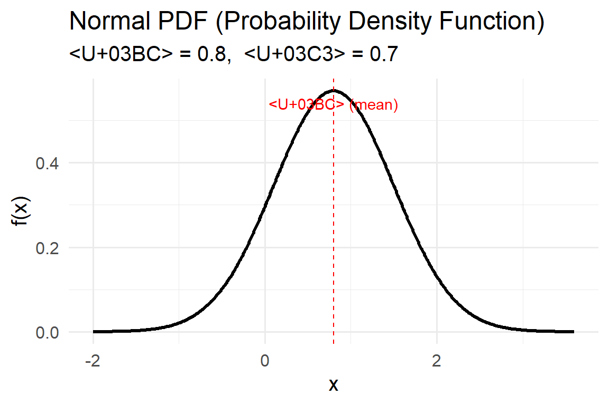
5.4.2 Lognormal
The Lognormal distribution models positive quantities whose logarithm is normally distributed. In other words, if \(Y = \ln(X)\) follows a Normal distribution with mean \(\mu\) and standard deviation \(\sigma\), then \(X\) follows a Lognormal distribution.
This distribution is right-skewed, meaning it captures phenomena where small values are common but large, extreme values occasionally occur. Such asymmetry is typical of environmental data like rainfall, pollutant concentration, or river discharge — where values cannot go below zero, yet large events can occasionally dominate the total.
Probability Density Function (PDF)
\[ f(x\mid \mu,\sigma)=\frac{1}{x\,\sigma\sqrt{2\pi}}\exp\!\left(-\frac{(\ln x-\mu)^2}{2\sigma^2}\right),\quad x>0 \]
Parameters:
- \(\mu\): Mean of the log-transformed variable (\(\ln X\)), determining the central tendency in log-space.
- \(\sigma>0\): Standard deviation of \(\ln X\), controlling the spread and skewness.
Larger \(\sigma\) values make the distribution more skewed and heavy-tailed.
Key properties:
- Mean \(E[X] = e^{\mu+\sigma^2/2}\)
- Median \(= e^{\mu}\)
- Mode \(= e^{\mu-\sigma^2}\)
- Defined only for \(x>0\).
Environmental examples:
- Rainfall amounts: Many small precipitation events occur, but occasional intense storms create a long right tail.
- River discharge: Streamflow over time shows frequent moderate flows and rare floods.
- Air pollutants (PM₂.₅, ozone): Concentrations are positive, right-skewed, and vary multiplicatively with meteorological conditions.
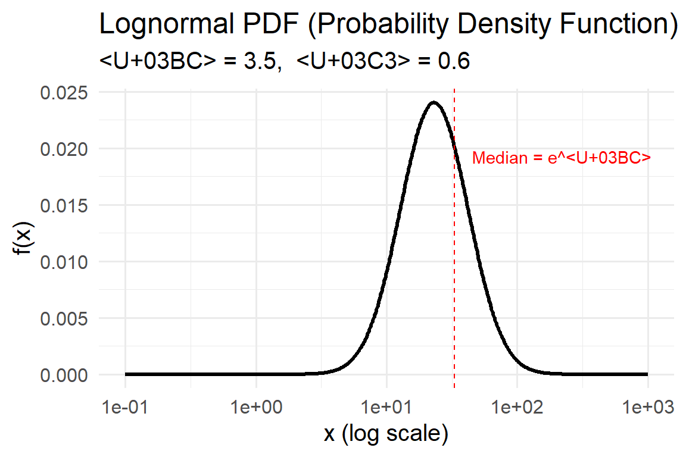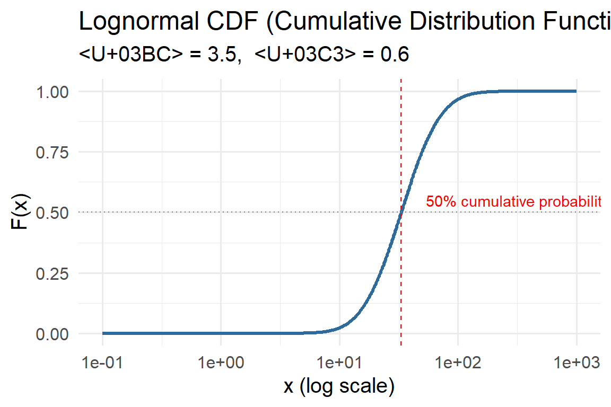
5.4.3 Gamma
The Gamma distribution is a flexible model for positive, continuous data that are right-skewed. It’s often used to represent waiting times, rates, and environmental magnitudes like rainfall totals, pollutant concentrations, or groundwater recharge rates.
The Gamma family includes a range of shapes:
- When the shape parameter \(k\) is small, the distribution is highly skewed (many small events, few large ones).
- As \(k\) increases, the curve becomes more symmetric and approaches a Normal shape.
This flexibility makes the Gamma distribution one of the most common in environmental and hydrological modeling.
Probability Density Function (PDF)
\[ f(x\mid k,\theta)=\frac{1}{\Gamma(k)\,\theta^k}\,x^{k-1}e^{-x/\theta},\quad x>0 \]
- \(k\): Shape parameter — controls the skewness.
- \(\theta\): Scale parameter — stretches or compresses the distribution horizontally.
- \(\Gamma(k)\) is the gamma function, a continuous extension of the factorial.
Key properties:
- Mean \(E[X] = k\theta\)
- Variance \(Var[X] = k\theta^2\)
- Mode (for \(k>1\)) \(= (k-1)\theta\)
- Skewness \(= 2/\sqrt{k}\) (decreases as \(k\) increases).
Environmental examples:
- Rainfall amounts: Daily or monthly precipitation totals often follow a Gamma distribution — many small rain events and occasional heavy storms.
- Pollutant concentrations: Skewed positive values due to occasional high-emission days.
- Hydrologic response times: Waiting time between flow events or recharge occurrences.
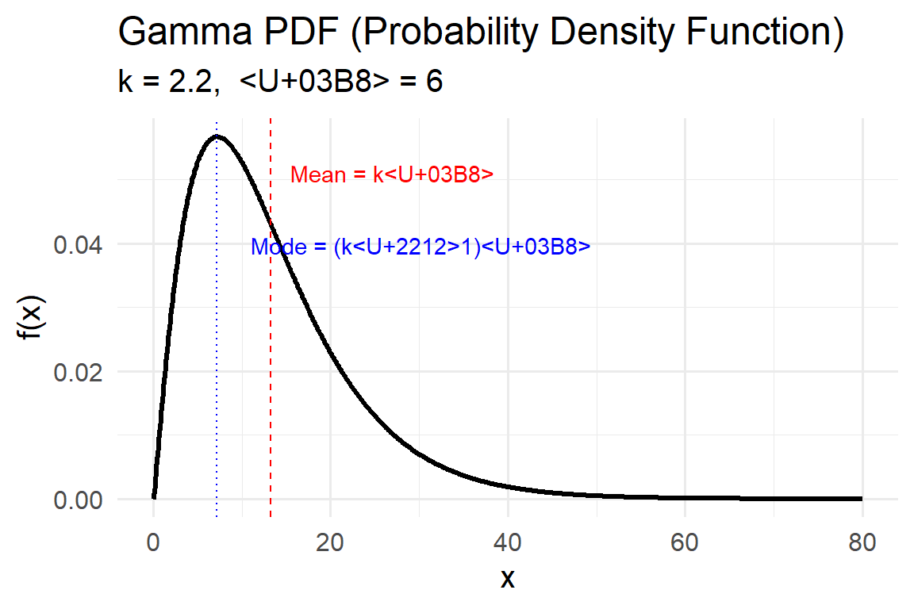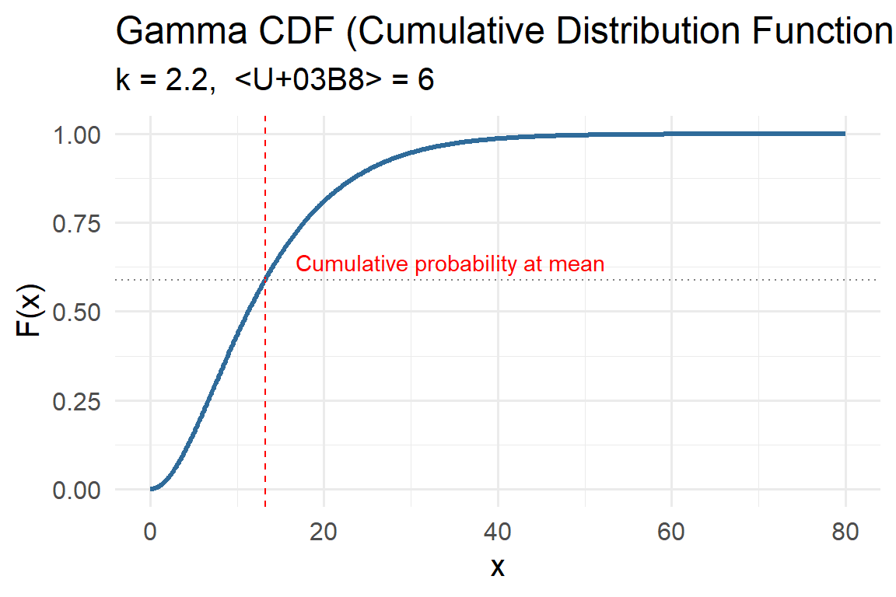
5.4.4 Exponential
The Exponential distribution is one of the simplest continuous probability models. It describes the time between random, independent events occurring at a constant average rate — such as the time until the next rainfall, the duration between earthquakes, or the decay of a pollutant.
Mathematically, it is a special case of the Gamma distribution where the shape parameter \(k = 1\). Despite its simplicity, the exponential model provides powerful insight into systems governed by memoryless processes, meaning the probability of an event occurring in the future is independent of how much time has already passed.
Probability Density Function (PDF)
\[ f(x\mid \lambda)=\lambda e^{-\lambda x}, \quad x \ge 0 \]
Parameters:
- \(\lambda>0\): Rate parameter, representing the average frequency of events per unit time.
- Mean \(E[X] = 1/\lambda\)
- Variance \(Var[X] = 1/\lambda^2\)
- Mean \(E[X] = 1/\lambda\)
Key property:
The Exponential distribution is memoryless: \[ P(X > s + t \mid X > s) = P(X > t) \] This makes it ideal for modeling systems with constant hazard rates, such as radioactive decay or Poisson event arrivals.
Environmental examples:
- Time between rainfall events: Days between consecutive storms often follow an exponential pattern during a rainy season.
- Pollutant decay: Concentration of a dissolved chemical decreasing exponentially over time due to natural degradation or dilution.
- Streamflow recovery: Time between flow spikes after storm events.
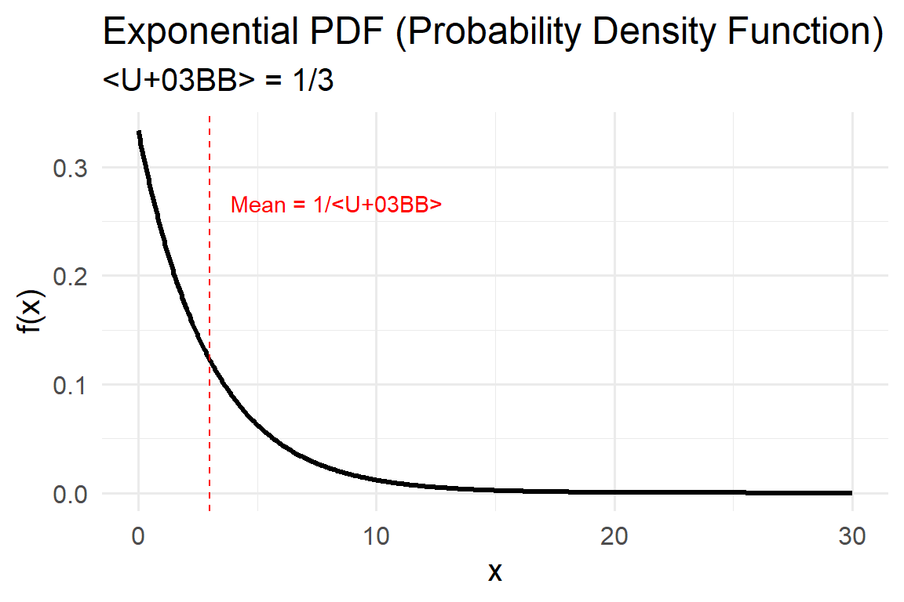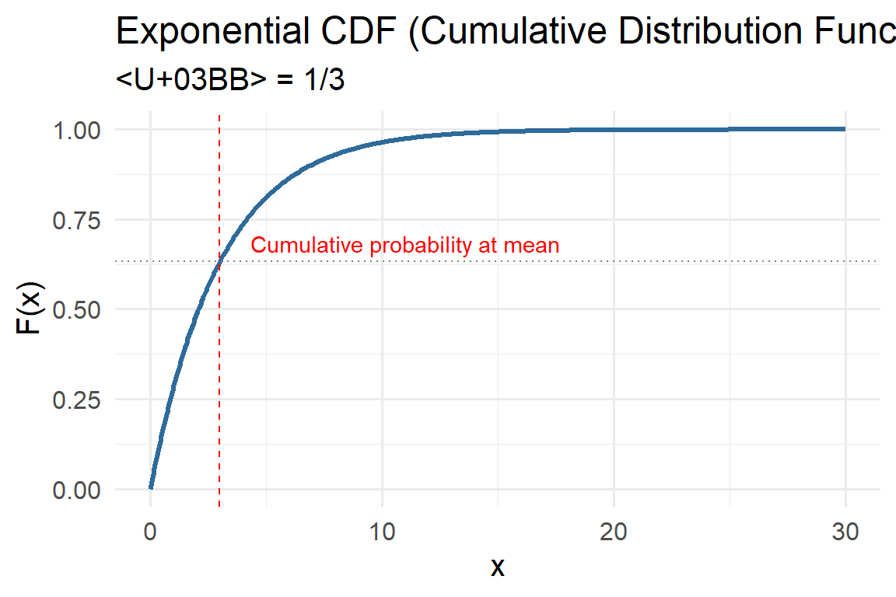
5.4.5 Weibull
The Weibull distribution is a versatile model that generalizes the Exponential distribution by introducing a shape parameter. It’s widely used in environmental and engineering applications to represent phenomena such as wind speeds, drought durations, extreme wave heights, or time-to-failure processes.
When the shape parameter \(k = 1\), the Weibull reduces to the Exponential distribution, meaning events occur at a constant rate. When \(k \ne 1\), the event rate changes over time — increasing for \(k > 1\) (aging systems) or decreasing for \(k < 1\) (infant mortality or early failures).
Probability Density Function (PDF)
\[ f(x\mid k,\lambda)=\frac{k}{\lambda}\left(\frac{x}{\lambda}\right)^{k-1} \exp\!\left[-\left(\frac{x}{\lambda}\right)^k\right], \quad x\ge 0 \]
Parameters:
- \(k>0\): Shape parameter, controls the slope and skewness.
- \(k < 1\): decreasing rate (events most likely early).
- \(k = 1\): constant rate (Exponential case).
- \(k > 1\): increasing rate (events more likely later).
- \(k < 1\): decreasing rate (events most likely early).
- \(\lambda>0\): Scale parameter, stretches the distribution horizontally; larger \(\lambda\) means longer time scales or higher magnitudes.
Key properties:
- Mean \(E[X] = \lambda\,\Gamma(1 + 1/k)\)
- Variance \(Var[X] = \lambda^2 [\Gamma(1 + 2/k) - \Gamma(1 + 1/k)^2]\)
- Mode (for \(k > 1\)) \(= \lambda[(k-1)/k]^{1/k}\)
Environmental examples:
- Wind speeds: Weibull provides excellent fits to observed wind speed distributions — used in wind energy assessment.
- Drought durations: The shape parameter \(k\) captures the likelihood of prolonged dry spells.
- Wave heights or storm durations: Often right-skewed and bounded below by zero, well-suited to Weibull modeling.
- Failure time models: Used for lifespan analysis of sensors, equipment, or biological survival times.
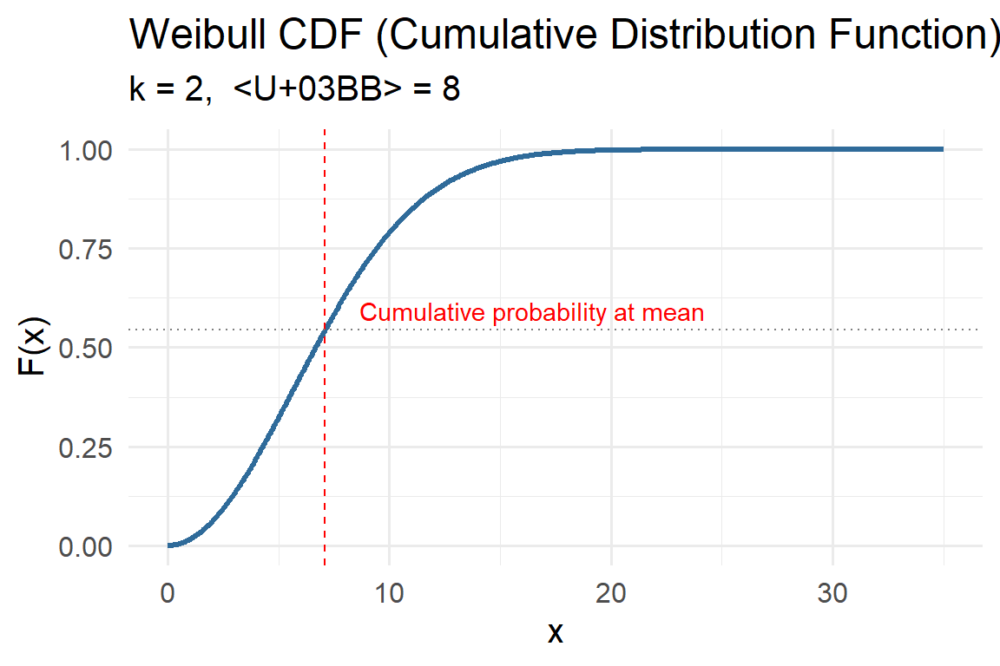
5.4.6 Poisson (Discrete Counts)
The Poisson distribution models the probability of a given number of discrete events occurring in a fixed interval of time or space, assuming events occur independently and at a constant average rate.
It’s a cornerstone of environmental and ecological modeling — ideal for situations where we count occurrences, such as the number of storms per year, lightning strikes per month, or invasive species arrivals at a site.
Probability Mass Function (PMF)
\[ P(X = x \mid \lambda) = \frac{e^{-\lambda}\lambda^x}{x!}, \quad x = 0,1,2,\ldots \]
Parameters:
- \(\lambda>0\): Rate parameter — the average number of occurrences per interval.
- Mean \(E[X] = \lambda\)
- Variance \(Var[X] = \lambda\)
- Mean \(E[X] = \lambda\)
Key properties:
- Models counts (integer values).
- Appropriate when events are rare and independent.
- The variance equals the mean — an important diagnostic property for checking fit.
Environmental examples:
- Storm frequency: Number of rainstorms per month or year.
- Wildfire ignitions: Count of new fires detected in a region during summer.
- Earthquake counts: Number of earthquakes above a threshold magnitude per year.
- Pollution events: Number of exceedances over a safe limit within a week.
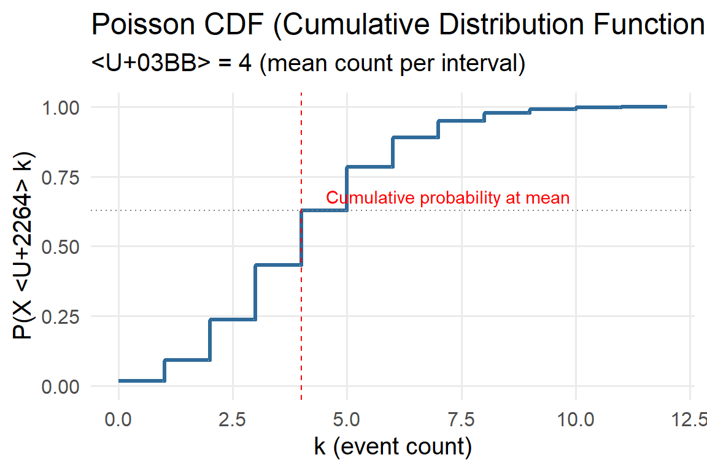
5.4.7 Gumbel (Extreme Value Type I): Emphasizing Fat Tails
In extreme-value work we care about the upper tail: rare, very large events (e.g., record floods). Compared to a Normal distribution (whose tail probability decays roughly like \(\exp(-x^2)\)), the Gumbel tail decays exponentially: \[ \bar F(x)=1-F(x)\approx \exp\!\left(-\frac{x-\mu}{\beta}\right)\quad\text{for large }x, \] which is heavier (fatter) than the Normal’s “thin” tail. A fatter tail means higher probability of extremes than you’d expect if you (incorrectly) used a Normal model.
Two visual cues help students see this:
- Tail shading (PDF & CDF): Shade the region beyond high quantiles (e.g., 95th and 99th percentiles).
- Return level marker: Show the \(T\)-year return level \(x_T\) (e.g., \(T=100\) years), which satisfies \(F(x_T)=1-1/T\). On the CDF this is a horizontal line at \(1-1/T\) and a vertical line at \(x_T\).
5.4.8 Quick guidance on when to use which
- Normal: deviations around a mean; symmetric noise; aggregated processes.
- Lognormal: positive and right-skewed (products of factors) — flows, concentrations.
- Gamma: flexible right-skew for amounts like rainfall depth.
- Exponential: waiting times with memoryless property (simple storm arrivals).
- Weibull: wind speed, lifetimes; shape controls tail and peak.
- Poisson: counts of events per interval (storms, fires).
- Gumbel: block maxima (flood peaks, annual max rainfall) when GEV shape ≈ 0.
5.4.9 From Probability to Modeling
In deterministic models, parameters are fixed values. In probabilistic models, those parameters are random variables drawn from PDFs that describe uncertainty.
Running the same model many times with randomly drawn parameters produces a distribution of outcomes rather than a single number. The result is a richer understanding of what could happen—and with what likelihood.
Reflection
Why might it be more informative to say “There is a 25% chance that nitrate concentrations will exceed the safe limit” rather than “Nitrate concentrations will be 12 mg/L next month”?
5.5 Representing Uncertainty with Probability Distributions
Probability distributions allow us to mathematically describe and model uncertainty.
Common distributions in environmental modeling include:
- Normal distribution: temperature fluctuations around a mean.
- Exponential distribution: time between random rainfall events.
- Poisson distribution: number of storms per year.
- Binomial distribution: number of successful seed germinations out of \(n\) attempts.
- Uniform distribution: when all values within a range are equally likely.
Selecting an appropriate distribution depends on the process being modeled. For instance, rainfall is often modeled with a Gamma or Weibull distribution to capture its right-skewed nature.
5.6 Deterministic vs Stochastic Models
A deterministic model produces the same outcome every time for the same inputs.
A stochastic model includes random variation—each run produces a slightly different result.
Example:
\[
N_{t+1} = rN_t(1 - N_t/K)
\]
is deterministic, while
\[
N_{t+1} = rN_t(1 - N_t/K) + \varepsilon_t
\]
is stochastic, where \(\varepsilon_t\) represents random environmental noise.
Stochasticity can be added to:
- Parameters: growth rate \(r\) varies yearly.
- Inputs: rainfall or temperature fluctuate randomly.
- Processes: survival or reproduction are probabilistic.
Deterministic models show the mean trajectory; stochastic models show the variability around that trajectory.
5.7 Monte Carlo Simulation
Monte Carlo simulation is the workhorse of probabilistic modeling — a powerful way to explore uncertainty when outcomes depend on random events.
Its name comes from Monte Carlo, Monaco, home to one of the world’s most famous casinos. Just as dice rolls, card draws, and slot spins involve chance, Monte Carlo methods rely on repeated random sampling to understand what outcomes are likely — and how variable they are.
5.7.1 How it works
- Define probability distributions for uncertain inputs (like dice rolls, card values, or interest rates).
- Randomly sample values from those distributions.
- Run the model or “game” using those sampled values.
- Repeat the process many times — hundreds or thousands of rounds.
- Analyze the resulting spread of outcomes to see probabilities, risks, and likely ranges.
5.7.2 Example: Simulating Casino Winnings
Imagine you’re playing a simple casino game — betting $10 on red in roulette.
You have an 18 out of 38 chance (in American roulette) of winning $10, and a 20 out of 38 chance of losing $10.
We can simulate this:
- Each spin = one random trial.
- The outcome is either +10 or −10.
- Repeat for, say, 1,000 spins and record your cumulative winnings.
5.7.3 Monte Carlo in action
By running this simulation thousands of times:
- You can estimate your expected return (average winnings per spin).
- You can visualize the distribution of possible final balances after 1,000 spins.
- You’ll likely see a bell-shaped spread centered below $0 — meaning the casino wins in the long run.
Each individual player’s outcome is uncertain, but across thousands of simulated players, patterns emerge. This is the power of Monte Carlo simulation: it turns randomness into predictable probabilities.
5.7.4 Takeaway
Monte Carlo simulations aren’t limited to casinos — they’re used anywhere uncertainty matters:
from finance (forecasting returns) to engineering (safety margins) to science (climate models).
The key idea:
Instead of solving uncertainty analytically, we simulate it repeatedly and let probability reveal the shape of possible futures.
5.8 Markov and Transition Models
Many environmental systems move among a finite set of states over time (e.g., land cover: forest, agriculture, urban; ecosystem health: healthy, stressed, degraded). Markov models capture these dynamics when the next state depends only on the current state, not on the full history (the Markov property).
5.8.1 Core Pieces
- States: \(S = \{1, \dots, K\}\) (e.g., Forest, Agriculture, Urban).
- Time: typically discrete steps (year, decade, season).
- Transition matrix \(\mathbf{P}\) (row-stochastic):
\[ P_{ij} = \Pr\{X_{t+1} = j \mid X_t = i\}, \quad \text{where } \sum_j P_{ij} = 1. \]
- State distribution (row vector) at time \(t\):
\[ \boldsymbol{\pi}_t = [\Pr(X_t=1), \dots, \Pr(X_t=K)]. \]
Forward projection: \[ \boldsymbol{\pi}_{t+1} = \boldsymbol{\pi}_t \mathbf{P}, \quad \boldsymbol{\pi}_{t+h} = \boldsymbol{\pi}_t \mathbf{P}^h \]
5.8.2 Example Transition Matrix (Annual)
| From To | Forest | Agriculture | Urban |
|---|---|---|---|
| Forest | 0.85 | 0.10 | 0.05 |
| Agriculture | 0.05 | 0.85 | 0.10 |
| Urban | 0.00 | 0.10 | 0.90 |
Each row represents the current state, and each column represents the next state.
The diagonal entries (like 0.85 for Forest → Forest) show persistence or stability.
Multi-step behavior:
- \(\mathbf{P}^2\): two-year transitions.
- \(\mathbf{P}^{10}\): ten-year transitions.
5.8.3 From “What’s Next?” to “Where Does It Settle?”
If the chain is irreducible (all states eventually communicate) and aperiodic (no fixed cycle, often ensured by diagonal entries > 0), then there exists a unique stationary distribution \(\boldsymbol{\pi}^*\) such that:
\[ \boldsymbol{\pi}^* = \boldsymbol{\pi}^* \mathbf{P}, \quad \sum_j \pi^*_j = 1 \]
Interpretation:
The stationary distribution represents the long-run proportion of time (or area) spent in each state, independent of where the system started.
For the matrix above:
\[ \boldsymbol{\pi}^* \approx [0.133, 0.400, 0.467] \]
So in the long run, the landscape tends toward: - 13.3% Forest - 40.0% Agriculture - 46.7% Urban
Even if the system starts as 100% Forest, it will gradually move toward this equilibrium mix.
5.8.4 Reading the Matrix Like an Ecologist or Planner
- Stability / Persistence: High diagonal values (\(P_{ii}\)) indicate long-term stability. Urban is very persistent here (0.90).
- Flux Pathways: Off-diagonal entries reveal where transitions are most likely (Agriculture → Urban at 0.10).
- Policy Sensitivity: Adjusting a few key entries—like lowering Agriculture → Urban—can shift the entire long-term balance.
5.8.5 Special Structures
- Absorbing states: \(P_{kk} = 1\) (e.g., Urban, if no reforestation possible). Once entered, the system stays there.
- The fundamental matrix \(\mathbf{N} = (\mathbf{I} - \mathbf{Q})^{-1}\) gives expected times to absorption.
- Metastable states: Very high self-transition probability, but not strictly absorbing (Urban with 0.90).
- Time-varying chains: \(\mathbf{P}_t\) changes over time (e.g., policy or climate effects).
- Continuous-time chains: Transitions occur continuously, governed by a rate matrix \(\mathbf{Q}\) where \(\mathbf{P}(t) = e^{t\mathbf{Q}}\).
5.8.6 Estimating Transition Matrices
- Classify each site’s state at two time steps (e.g., land cover maps).
- Count transitions \(N_{ij}\) from \(i \to j\).
- Normalize by row:
\[ \widehat{P}_{ij} = \frac{N_{ij}}{\sum_j N_{ij}}. \] - Quantify uncertainty:
- Rows follow a multinomial distribution.
- Use Dirichlet priors for Bayesian inference or bootstrap for intervals.
- Rows follow a multinomial distribution.
- Check assumptions:
- Does the Markov property hold (no dependence on earlier states)?
- Is the time step appropriate?
- Are there misclassification errors (use Hidden Markov Models if so)?
- Does the Markov property hold (no dependence on earlier states)?
5.8.7 What Markov Models Answer Well
- Short-term forecasts: \(\boldsymbol{\pi}_0 \mathbf{P}^h\)
- Long-run equilibrium: \(\boldsymbol{\pi}^*\)
- Sensitivity analysis: Which transitions most affect long-run outcomes
- Expected times: Probability or expected time to reach certain states (e.g., >50% Urban)
5.8.8 Environmental Applications
- Land cover change: Forecast forest loss or urban expansion; test reforestation policies.
- Species occupancy: States = present/absent; transitions reflect colonization or extinction rates.
- Fire regimes: States = unburned, recently burned, recovering; estimate recurrence intervals.
- Climate regimes: El Niño, La Niña, Neutral; evaluate persistence and switching probabilities.
- Water quality: Good, Impaired, Hypoxic; estimate risks of degradation and recovery likelihood.
5.8.9 Common Pitfalls and Fixes
- Path dependence: Add “memory” by defining expanded states (Forest-young vs Forest-old).
- Nonstationarity: Use time-varying \(\mathbf{P}_t\) matrices under different scenarios.
- Spatial heterogeneity: Fit region-specific matrices or spatially varying coefficients.
- Classification error: Employ Hidden Markov Models (HMMs) to account for uncertainty in observed states.
5.8.10 Mini Worked Example
Starting with 100% Forest (\(\boldsymbol{\pi}_0 = [1, 0, 0]\)):
| Time Step | Forest | Agriculture | Urban |
|---|---|---|---|
| Year 0 | 1.000 | 0.000 | 0.000 |
| Year 5 | 0.477 | 0.305 | 0.218 |
| Year 10 | 0.276 | 0.378 | 0.347 |
| Long Run | 0.133 | 0.400 | 0.467 |
Interpretation:
Even a fully forested landscape trends toward an urban–agricultural equilibrium under current transition rates.
If we increase Forest persistence (e.g., \(P_{\text{Forest,Forest}}\) from 0.85 → 0.92), the long-run forest fraction rises substantially—showing how policy changes shift long-term stability.
5.8.11 Key Takeaway
Markov and transition models provide a simple yet powerful framework for studying change over time in systems with distinct states.
They show not only where a system is likely to go next but also its long-term equilibrium, stability, and sensitivity to intervention.
Whether tracking forests, species, or climate regimes, these models transform observations of “change” into quantitative forecasts of persistence and transformation.
5.9 Communicating Probabilistic Results
Probabilistic results are often harder to communicate than single-number predictions, but they are more honest and useful.
Good practices:
- Report ranges or confidence intervals instead of single values.
- Use visualizations such as:
- Histograms: frequency of outcomes.
- Fan plots: spread of model trajectories over time.
- CDFs: probability of exceeding thresholds.
- Histograms: frequency of outcomes.
- Phrase results as probabilities:
- “There’s a 30% chance of flood levels exceeding 2 m.”
- “90% of simulations predict temperatures rising above 1.5 °C by 2050.”
- “There’s a 30% chance of flood levels exceeding 2 m.”
Communicating uncertainty transparently fosters trust and supports risk-aware decisions.
5.10 Summary and Reflection
Environmental systems are inherently variable and uncertain. Probabilistic models capture that variability by representing parameters, inputs, and outcomes as distributions rather than fixed values.
Key ideas from this chapter:
- Probability distributions describe uncertainty quantitatively.
- PDFs and CDFs form the foundation for stochastic modeling.
- Monte Carlo simulations explore possible futures through random sampling.
- Markov models describe transitions between discrete system states.
- Probabilistic models shift focus from exact predictions to likelihoods and risks.
By embracing uncertainty rather than avoiding it, environmental scientists build models that are both more realistic and more useful for decision-making under changing and unpredictable conditions.